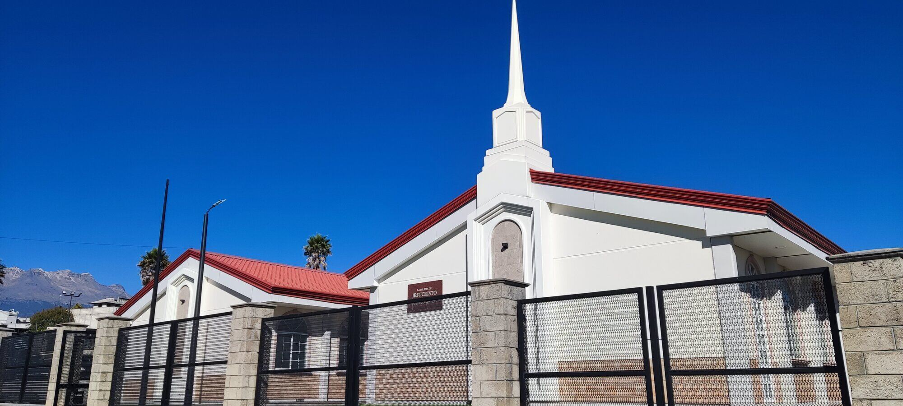

Alternative building
During the remodeling process, Huejotzingo Ward members are allowed to meet at the Ixtazihuatl Ward Building, which is located in Santa Maria Atexcac Town. The distance between the 2 buildings is just 10 kilometers and takes around 15 minutes to get there by car or 30 minutes using public transport. Huejotzingo Ward Sunday meetings will start at 11:30 AM after Ixtazihuatl Ward finishes its own meetings. The location of the temporary building can be seen by accessing the following link at Google Maps: Ixtazihuatl Ward | Maps (churchofjesuschrist.org)
Special Transport on Sundays
Elder's Quorum Presidency has planned to provide transport for Huejotzingo Ward members on Sundays to get to the Ixtacihuatl Ward building. Shuttle buses will depart from the Huejotzingo Ward Building on Sundays at 10:30 a.m. with a cost of $20 pesos per person.
Restrictions
Since the temporary building will be used by two wards at the same time, it is recommended to use public transport to get to the Ixtazihualt building because parking spots are limited. Internet connectivity is also limited due to the location of the building and the services available in Santa Maria Atexcac. Public transport is available only from 7:00 a.m. to 7:00 p.m. Rooms inside the building are small and no air conditioning is available inside the building. There won't be an office for Huejotzingo Ward leaders inside the Ixtazihuatl Ward Building.